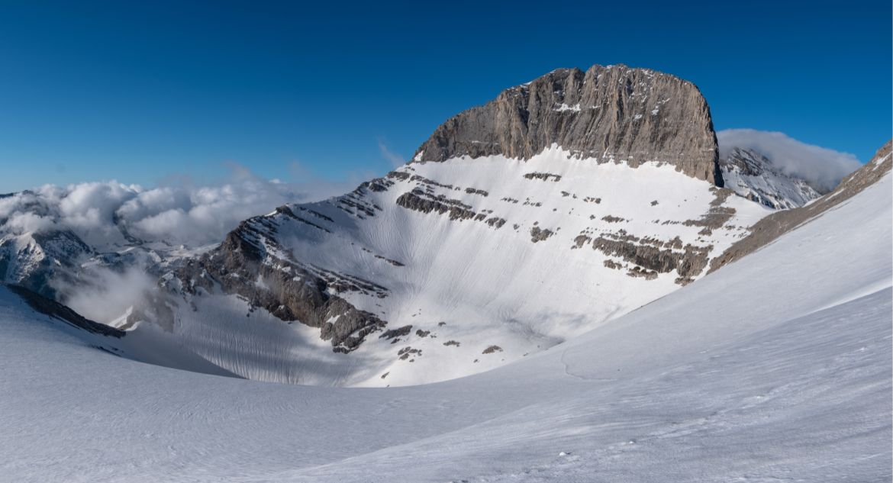

Ver imagens de montanhas com neve é sempre indescritível, mas o Monte Olimpo (2.917 m), tem algo a mais. O pico mais alto da Grécia sempre atraiu admiradores – tanto por sua rica vida selvagem quanto pelo mistério de suas cavernas, planaltos e cenários cobertos de branco. Não é à toa que os antigos gregos escolheram o Monte Olimpo como a morada dos 12 deuses.